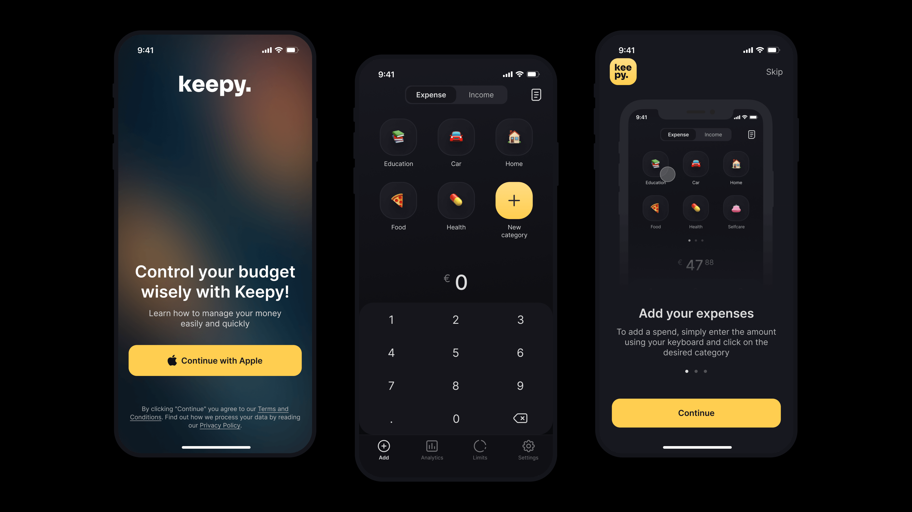
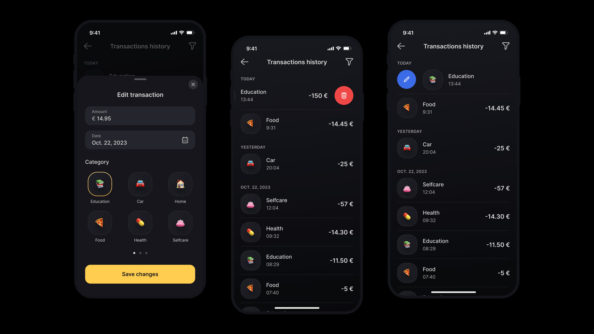
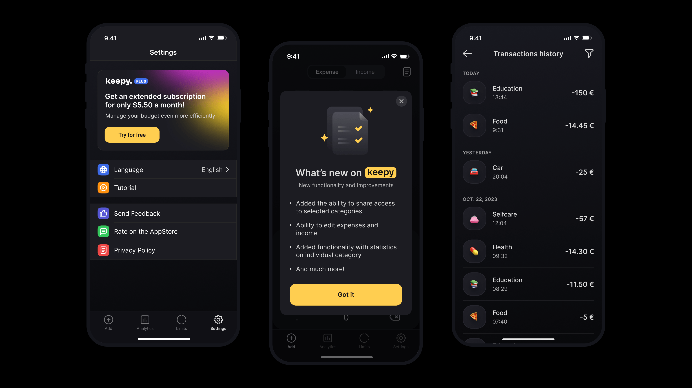

A personal finance app designed to make expense tracking feel simple: enter an amount and choose a category right from the first screen.

Keepy started with a problem I had myself: expense-tracking apps felt awkward to use, and adding a purchase often took several steps. Competitor analysis also surfaced difficult onboarding, cluttered interfaces, and friction in the expense-entry flow. I set out to make the everyday action feel direct and the product visually clear.
I designed Keepy end-to-end as the sole designer, working with a developer to bring the iOS app to the App Store.
Reviewed existing expense trackers and used the friction points I found to shape Keepy's product experience.
The first screen opens with a numeric keypad and category selection, so users can start recording an expense immediately.
Users could review today's expenses and transaction history, then explore spending by month, year, or category with charts.
An educational onboarding introduced expense entry, analytics, and the app's main areas.
Created a modern, dark, minimalist visual identity and custom illustrations for the app.
Prepared the App Store materials and partnered with the developer through implementation and release.

The first version focused on expense tracking; income tracking was not part of the MVP. The product shipped in the App Store and received positive reviews. I still use my locally installed version of Keepy.
Future ideas included setting spending limits by category, recognizing receipts and sorting expenses automatically, and shared categories for people planning expenses together, such as a trip. These remained product plans rather than shipped features.
